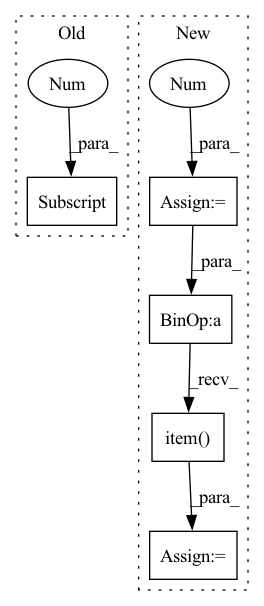

Pattern ID :4136
Before Change
losses = []
for i in range(3):
loss_item = yolo_losses[i](outputs[i], targets)
losses.append(loss_item[0] )
loss = sum(losses)
loss.backward()
optimizer.step()
After Change
//----------------------//
outputs = net(images)
losses = []
num_pos_all = 0
//----------------------//
// 计算损失
//----------------------//
for i in range(3):
loss_item, num_pos = yolo_losses[i](outputs[i], targets)
losses.append(loss_item)
num_pos_all += num_pos
loss = sum(losses) / num_pos_all
total_loss += loss.item()
//----------------------//
// 反向传播
In pattern: SUPERPATTERN
Frequency: 3
Non-data size: 5
Instances Fragment ID: 15314733
Project Name: bubbliiiing/yolov4-pytorch
Commit Name: a60e3df58d34559fde5dcaebed532f3cc3a6611f
Time: 2021-01-13
Author: 47347516+bubbliiiing@users.noreply.github.com
File Name: train_with_tensorboard.py
M Class Name: AnonimousClass
N Class Name: AnonimousClass
M Method Name: fit_ont_epoch(10)
N Method Name: fit_ont_epoch(10)
M Parent Class:
N Parent Class:
M File Name: train_with_tensorboard.py
N File Name: train_with_tensorboard.py
M Start Line: 42
M End Line: 111
N Start Line: 42
N End Line: 129
Before Change
losses = []
for i in range(3):
loss_item = yolo_losses[i](outputs[i], targets_val)
losses.append(loss_item[0] )
loss = sum(losses)
val_loss += loss
pbar.set_postfix(**{"total_loss": val_loss.item() / (iteration + 1)})
After Change
//----------------------//
outputs = net(images)
losses = []
num_pos_all = 0
//----------------------//
// 计算损失
//----------------------//
for i in range(3):
loss_item, num_pos = yolo_losses[i](outputs[i], targets)
losses.append(loss_item)
num_pos_all += num_pos
loss = sum(losses) / num_pos_all
//----------------------//
// 反向传播
//----------------------//
loss.backward()
optimizer.step()
total_loss += loss.item()
pbar.set_postfix(**{"total_loss": total_loss / (iteration + 1),
"lr" : get_lr(optimizer)})
Fragment ID: 15314732
Project Name: bubbliiiing/yolov4-pytorch
Commit Name: a60e3df58d34559fde5dcaebed532f3cc3a6611f
Time: 2021-01-13
Author: 47347516+bubbliiiing@users.noreply.github.com
File Name: train.py
M Class Name: AnonimousClass
N Class Name: AnonimousClass
M Method Name: fit_one_epoch(9)
N Method Name: fit_one_epoch(9)
M Parent Class:
N Parent Class:
M File Name: train.py
N File Name: train.py
M Start Line: 41
M End Line: 100
N Start Line: 45
N End Line: 117
Before Change
if "whamr" in self.hparams.data_folder:
targets = self.hparams.reverb(
targets[0] .t(), torch.ones(targets.size(-1))
)
targets = targets.t().unsqueeze(0)
mix = targets.sum(-1)After Change
if "whamr" in self.hparams.data_folder:
mix = 0
for mic in rirs:
// rir_cat = torch.flip(torch.stack(mic), [1]).unsqueeze(0)
rir_cat = (torch.stack(mic)).unsqueeze(0)
rir_cat = rir_cat.to(self.device)
mix = mix + F.conv1d(
targets.permute(0, 2, 1), rir_cat
)
mix = mix.squeeze(1)
// fix the levels
coef = (
targets.abs().max().item() / mix.abs().max().item()
)
mix = mix * coef
// torchaudio.save("reverbtest.wav", mix.cpu(), 8000)
// torchaudio.save("target.wav", targets[:, :, 0].cpu(), 8000) Fragment ID: 15314736
Project Name: speechbrain/speechbrain
Commit Name: 59bc3bf412dc5c1c2e9baf687ede623cc1c4c588
Time: 2021-03-19
Author: csubakan@gmail.com
File Name: recipes/WSJ0Mix/separation/train.py
M Class Name: Separation
N Class Name: Separation
M Method Name: compute_forward(6)
N Method Name: compute_forward(5)
M Parent Class: sb.Brain
N Parent Class: sb.Brain
M File Name: recipes/WSJ0Mix/separation/train.py
N File Name: recipes/WSJ0Mix/separation/train.py
M Start Line: 50
M End Line: 65
N Start Line: 42
N End Line: 79